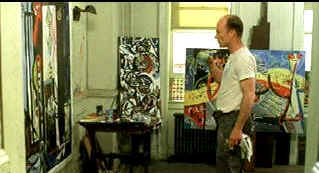

| Pollock (SE)/B,B+ |
| Columbia/2000/122/ANA 1.85 |
Pollock is a sincere effort from debut feature director Ed Harris. Unfortunately, all the sincerity and respect in the world cannot overcome the fact that there is hardly a likeable character in the film. The story of angry, moody, modernist painter Jackson Pollock, the film traces Pollock's career from those hungry days in the 1940s when he shared an apartment with his brother's family to the height of his fame. Pollock's alcohol abuse gets in his way and adds to his frustration in search of an artistic voice and critical recognition. Life changes from his first meeting with fellow artist Lee Krasner, who later becomes his wife. From tight quartered apartments in New York City to the bucolic setting of the relative unspoiled East End of Long Island, Pollock attacks the canvas.
 |
| Pollock ponders an inspired modification. ©Columbia |
Pollock (as portrayed) is himself nothing more than a boor, hungry for success, full of
himself. Lee
Krasner latches onto him like the hungry promoter. Is she using Pollock's talent to satisfy her own
search for artistic success or is she sacrificing her own art to a greater purpose, Pollock's
art? Staples of Pollock's world are the effete art critic Clement Greenberg whose
bloated opinions reflect his soft and flabby physique. Art patron Peggy Guggenheim appears to have taken it up the heim once too often.
Beyond the world captured in Pollock, you have the feeling that there's lots more to these
lives than the often dreary existence portrayed on the screen.
Watching depictions of Pollock put paint to canvas, an ostensibly
static act, is surprising dynamic and exciting. In fact, these moments of canvas communion are the
best in Pollock.
The acting is terrifically intense. Fulminating in his imagination for almost a
decade, Pollock was a labor of love for Ed Harris. Harris is ready to explode on the screen
at any given moment. He's quite brilliant, unflinching in depicting the artist. Marcia Gay Harden
stands toe to toe with Harris in the acting arena as Lee Krasner. It's a fresh performance, earthy,
raw. Many smaller roles are acted with great professionalism.
Lisa Renzler's cinematography is often incandescent, capturing
scents of Hopper, Millet and other artists in
light and composition. When Pollock addresses the first big canvas, a segment I like to call Mini
Symphony of the Big Canvas, the film comes to life with the energy often missing. Harris addresses
the canvas with passion. There's nothing between the man and his work and the pure beauty of the
action is unsurpassed. Jeff Beal's music captures the excitement, and Renzler's camera captures every
stroke. Harris command of the brush is very impressive and the display of art work used in the film
is exciting and inspiring.
Overall, the DVD looks pretty good. A few scenes are less than perfectly sharp, but some
softness may have been the intent of the filmmakers or even a focus puller's failure. Harris,
undoubtedly an actor's director would always choose performance clarity over image sharpness.
Color, happily, is consistently outstanding. Details of the Pollock paintings are
consistently sharp with each color owning its own space. The subtle changes of Pollock's paintings as he layers the colors comes through admirably.
Good balance of light and dark. The soundtrack is clean and open in Dolby Digital 5:1 and the raspy
delivery of singer Tom Waits is transparent in the wonderful closing credits song The World
Keeps Turning.
Like the filmmaking, the audio commentary from director/star Ed Harris
comes fromt he heart. He highlights areas that did not quite work or when he had to compromise.
Harris delivers the details in a slightly hushed voice as he's watching the film with almost
reverential devotion. The commentary is very much like spending some quality time with the
director. Included too are a making of documentary, deleted scenes and a Charlie Rose interview of
Ed Harris.

The Movie Poster Archive includes extensive poster images from the films of stars like Susan Hayward, Kirk Douglas, Katharine Hepburn and many more. Our featured star is Kirk Douglas.

Selections from the Feature Archive include articles on
Akira Kurosawa, Blonde Bimbos,
Frank
Darabont, Steven Culp,
John
Herzfeld or Vietnam: The
Hollywood Pariah, and many more....
Director Walks the Wire
Balanced by an armor of movie lore and filmmaking daring, director John Herzfeld is comfortable
walking the high wire. Check out this interview by Stu Kobak.

With the introduction of the Columbia Super Bit collection it looks
like a new wave of repackaging marketing might be just around the corner.
New Edition: Bit by Bit

The Adventures of
Baron Munchausen/A,A-

Director Terry Gilliam's richly detailed interpretation of the outlandishly
imagined and fabricated exploits of the legendary eighteenth-century German adventurer and
storyteller.

 Have you visited Home Theater
Talk lately? One of the friendliest places on the Net for Home Theater and DVD discussion, you
can get help for installation problems or simply share your opinions with other Vidiots.
Have you visited Home Theater
Talk lately? One of the friendliest places on the Net for Home Theater and DVD discussion, you
can get help for installation problems or simply share your opinions with other Vidiots.

The AV
Science Forum provides great feedback on the latest home theater equipment with a wide range of
opinions. Outstanding home theater resource.

An on-line Home Theater magazine with excellent hardware reviews,
including thorough and responsible research. Check it out.